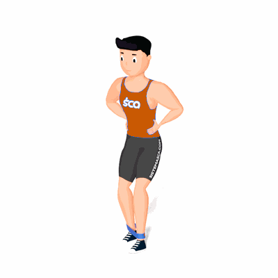

Monster Walk

O exercício trabalha o fortalecimento dos músculos do glúteo, com ênfase no glúteo máximo.
Ficha Técnica
Tipo: Funcional
Grupo Muscular: Glúteo
Aparelho: Nenhum
Músculos: Nenhum
Como realizar
- Coloque a faixa em volta dos tornozelos. Fique em pé com os pés afastados na largura do quadril, contraía o abdômen, dobre ligeiramente os joelhos e gire para a frente nos quadris para assumir uma postura atlética;
- Em seguida, dê passos alternados para trás (cada passo deve ter cerca de 20 a 25 centímetros de comprimento) enquanto mantém uma distância igual entre os pés e a tensão na faixa;
- Concentre-se nos quadris: eles devem ficar retos (voltados para a frente) e nivelados durante todo o exercício.
 RC STORE
RC STORE